2026
Ouvra
Coordination BIM avec IA
Outil de coordination BIM : visionneuse, détection de collisions, échanges.
Pilotage par l'IA, avec des instructions écrites ou dictées à la voix.
Développeur, BIM Manager · Applications web et IA
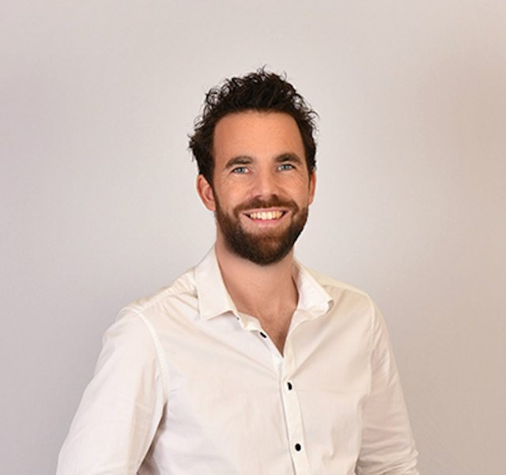
Dix ans dans le bâtiment, dont cinq en BIM chez Bouygues Construction. BIM Manager sur Mareterra, l'extension en mer de Monaco (plus de 100 maquettes interconnectées). Depuis 2022 je conçois et je développe des applications web de bout en bout. Cerithe, un carnet de santé numérique du bâtiment, est en production. Ouvra, un outil de coordination BIM avec IA, est en ligne. Je pilote l'IA et je vérifie ce qu'elle produit.
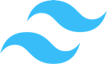
TailwindExpressNest.js
Données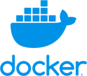
DockerNginx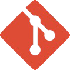
Git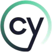
Cypress2026
Ouvra
Coordination BIM avec IA
Outil de coordination BIM : visionneuse, détection de collisions, échanges.
Pilotage par l'IA, avec des instructions écrites ou dictées à la voix.
2026
Nexio
Prospection et suivi de contacts
Application de suivi de recherche d'emploi et de prospection.
Contacts LinkedIn, relances automatiques, kanban, classement des contacts par LLM.
2024/2026
Autres réalisations
Outils et sites
ChouxFleurs : pronostics de naissance et liste de naissance.
Deux sites WordPress : Le Dressing de Maïlys et Niort Endurance 79.
2022/2026
Cerithe
Carnet de santé numérique du bâtiment
Travaux et documents consignés par le propriétaire, historique transmis lors d'une vente.
Dirigeant de la société (2022/2023), puis développeur de l'application.
2020/2021
BIM Manager
Bouygues Construction, Monaco
Mareterra, extension en mer de Monaco : plus de 100 maquettes interconnectées.
Protocoles d'échange entre les métiers, coordination de la synthèse, conflits entre maquettes.
2018/2020
BIM Coordinateur
Bouygues Bâtiment Sud-Est, Marseille
Chantiers TPR2 et MRS3.
Convention BIM, contrôle des maquettes multi-lots, échanges IFC, règles Solibri.
2016/2017
Assistant études techniques BIM
Bouygues Travaux Publics, Paris
Processus BIM de la construction des caissons de Monaco et leur mise en place :
GED M-Files, BCF avec BIMcollab, maquettes de synthèse Navisworks.
2011/2016
Analyste bâtiment et rénovation
EP, Nantes
Projet R&D SmartDiag avec le CSTB : création de 300 modèles représentatifs du parc immobilier français.
8 collaborateurs formés.
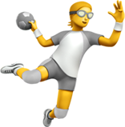
Handball (16 ans)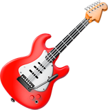
Guitare (8 ans)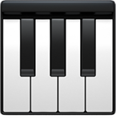
Piano (2 ans)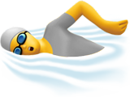
Triathlons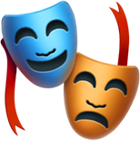
Théâtre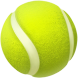
Padel (2 ans)